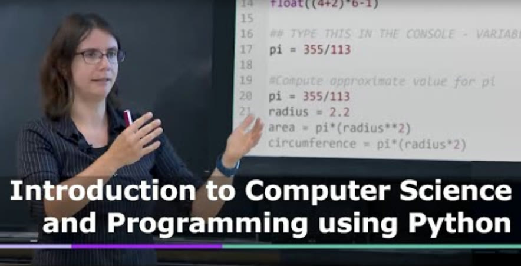

<!doctype html>
<html lang="ko"><head><meta charset="utf-8"><title>Duvi 전체화면 시안 v2</title>
<style>
:root{--bg:#090b10;--surface:#12161d;--fill:#1a1f28;--text:#eef1f6;--body:#c9cfda;--muted:#8a94a6;--accent:#4c8df0;--line:#222a36}
*{box-sizing:border-box;margin:0;padding:0}
html,body{height:100%;overflow:hidden;background:var(--bg);color:var(--text);font:15px/1.6 "Malgun Gothic","Apple SD Gothic Neo",system-ui,sans-serif}
button{font:inherit;color:inherit;background:none;border:0;cursor:pointer}
.app{position:fixed;inset:0;display:flex}
.stage{flex:1;min-width:0;display:flex;flex-direction:column}
.video{flex:1;min-height:0;display:flex;align-items:center;justify-content:center;background:#000;position:relative}
.video img{max-width:100%;max-height:100%;object-fit:contain;display:block}
.ctl{position:absolute;left:0;right:0;bottom:0;height:52px;padding:0 12px;display:flex;align-items:center;gap:2px;background:linear-gradient(transparent,rgba(0,0,0,.7))}
.ib{min-width:40px;height:40px;padding:0 10px;border-radius:8px;display:inline-flex;align-items:center;justify-content:center;gap:6px;color:var(--text);font-size:14px}
.ib:hover{background:rgba(255,255,255,.1)}
.time{font-size:14px;color:var(--body);margin:0 10px;font-variant-numeric:tabular-nums}
.sp{flex:1}
.strip{height:36px;display:flex;align-items:center;gap:14px;padding:0 20px;background:var(--bg)}
.track{position:relative;flex:1;height:3px;background:#2a3240;border-radius:2px}
.played{position:absolute;inset:0 68% 0 0;background:#6d8fc4;border-radius:2px}
.mk{position:absolute;top:50%;width:11px;height:11px;margin:-5.5px 0 0 -5.5px;border-radius:50%;border:2px solid #b9c6da;background:var(--bg)}
.mk.done{background:#b9c6da}
.clock{font-size:13px;color:var(--muted);font-variant-numeric:tabular-nums}
.caps{padding:6px 24px 16px;text-align:center}
.caps .en{font-size:20px;color:#d5dae3}
.caps .ko{font-size:23px;color:#fff;margin-top:6px}
/* side panel: fixed split region, quieter than the video */
.panel{width:384px;flex:none;background:var(--surface);display:flex;flex-direction:column;min-height:0}
.ph{height:52px;flex:none;display:flex;align-items:center;padding:0 8px 0 20px;gap:22px}
.tab{height:52px;font-size:15px;color:var(--muted);position:relative}
.tab[aria-selected=true]{color:var(--text);font-weight:700}
.tab[aria-selected=true]:after{content:"";position:absolute;left:0;right:0;bottom:12px;height:2px;background:var(--text);border-radius:1px}
.sub{flex:none;display:flex;align-items:baseline;gap:12px;padding:6px 20px 10px;font-size:13px;color:var(--muted)}
.sub b{color:var(--text);font-weight:600}
.stream{flex:1;min-height:0;overflow:auto;padding:6px 20px 16px}
.item{padding:14px 0 18px}
.item + .item{border-top:1px solid var(--line)}
.meta{display:flex;gap:10px;align-items:baseline;font-size:13px;color:var(--muted)}
.meta a{color:#9fb6d8;text-decoration:none;font-variant-numeric:tabular-nums}
.q{font-size:15px;font-weight:700;color:var(--text);margin-top:2px}
.lab{display:block;font-size:12px;color:var(--muted);margin-top:10px}
.ans{font-size:14px;color:var(--body)}
.mine{font-size:14px;color:var(--text)}
.act{margin-top:6px;font-size:13px;color:#9fb6d8}
.now{display:flex;align-items:center;gap:10px;font-size:12px;color:var(--accent);padding:10px 0}
.now:after{content:"";flex:1;height:1px;background:var(--accent);opacity:.5}
.comp{flex:none;padding:12px 20px 16px}
.field{background:var(--fill);border-radius:10px;display:flex;align-items:center;gap:8px;padding:6px 6px 6px 14px}
.field .ph2{flex:1;color:#7a8496;font-size:14px}
.field .at{font-size:13px;color:var(--muted);font-variant-numeric:tabular-nums}
.send{height:36px;padding:0 16px;border-radius:8px;background:var(--accent);color:#fff;font-size:14px;font-weight:600}
.hint{margin-top:8px;font-size:12px;color:var(--muted)}
/* C: transcript with questions */
.cue{padding:8px 0;font-size:14px;color:var(--body)}
.cue .tm{font-size:12px;color:var(--muted);font-variant-numeric:tabular-nums;margin-right:8px}
.cue .ko{display:block;color:var(--muted);font-size:13px}
.cue.cur{color:var(--text)}
.cue.cur .tm{color:var(--accent)}
.qin{margin:2px 0 10px 44px;padding:2px 0}
.qin .q{font-size:14px}
/* B: question row under captions */
.dock{flex:none;background:var(--surface);border-top:1px solid var(--line);display:grid;grid-template-columns:1fr 420px;min-height:0}
.dock .last{padding:14px 24px;overflow:hidden}
.dock .side{padding:14px 20px;display:flex;flex-direction:column;justify-content:space-between}
.tag{position:fixed;left:12px;top:10px;z-index:9;font-size:12px;padding:2px 8px;border-radius:6px;background:rgba(0,0,0,.55);color:#cfd6e2}
</style></head><body><div id="root"></div>
<script>
const v=(location.hash||'#a').slice(1);
const ctl=(extra='')=>`<div class="ctl"><button class="ib" aria-label="이전 문장">⏮</button><button class="ib" aria-label="재생">▶</button><button class="ib" aria-label="다음 문장">⏭</button><span class="time">03:12 / 1:03:29</span><button class="ib" aria-label="이 문장 다시 듣기">↻</button><span class="sp"></span>${extra}<button class="ib" aria-label="자막 설정">자막</button><button class="ib" aria-label="설정">⚙</button><button class="ib" aria-label="전체화면 나가기">⤡</button></div>`;
const strip=`<div class="strip"><span class="clock">00:00–10:00</span><div class="track"><div class="played"></div><span class="mk" style="left:5.8%" title="00:35 열린 질문"></span><span class="mk done" style="left:21.6%" title="02:10 내 설명 있음"></span></div><span class="clock">03:12</span></div>`;
const caps=`<div class="caps"><div class="en">So in this class, we'll learn what computation is and how to write programs.</div><div class="ko">이 수업에서는 계산이 무엇이고 프로그램을 어떻게 쓰는지 배웁니다.</div></div>`;
const item1=`<div class="item"><div class="meta"><a href="#">00:35</a><span>○ 열린 질문</span></div><div class="q">방금 부분을 쉬운 비유로 설명해 줘</div><span class="lab">AI 제안</span><div class="ans">새 학기 첫날 선생님이 "이 과목을 오래 가르쳐 왔다"고 인사하는 장면이에요. 00:28에서 MIT EECS에서 10년 가까이 강의했다고 소개합니다.</div><button class="act">내 설명 쓰기</button></div>`;
const item2=`<div class="item"><div class="meta"><a href="#">02:10</a><span>● 내 설명 있음</span></div><div class="q">float(4+2)는 왜 6.0이 나와?</div><span class="lab">AI 제안</span><div class="ans">float()은 정수 6을 소수점이 있는 수 6.0으로 바꿉니다. 02:04 화면의 14번 줄이에요.</div><span class="lab">내 설명</span><div class="mine">int를 float로 바꾸면 값은 같고 모양만 소수가 된다.</div></div>`;
const comp=(ph,hint)=>`<div class="comp"><div class="field"><span class="at">03:12</span><span class="ph2">${ph}</span><button class="ib" aria-label="보낼 자료와 모델">⋯</button><button class="send">보내기</button></div>${hint?`<div class="hint">${hint}</div>`:''}</div>`;
let h='';
if(v==='a'){
 h=`<span class="tag">시안 A v2 · 옆 패널</span><div class="app"><div class="stage"><div class="video">${ctl('<button class="ib">질문 패널</button>')}</div>${strip}${caps}</div>
 <aside class="panel"><div class="ph"><button class="tab" aria-selected="true">질문</button><button class="tab" aria-selected="false">대본</button><span class="sp"></span><button class="ib" aria-label="패널 닫기">✕</button></div>
 <div class="sub"><b>전체 2</b><span>열린 질문 1</span><span class="sp"></span><span>시간순</span></div>
 <div class="stream">${item1}${item2}<div class="now">지금 03:12</div></div>${comp('막힌 점을 물어보세요','보낸 질문은 내 기록에 열린 질문으로 남아요')}</aside></div>`;
}else if(v==='b'){
 h=`<span class="tag">시안 B v2 · 자막 아래 질문 줄</span><div class="app"><div class="stage"><div class="video">${ctl()}</div>${strip}${caps}
 <div class="dock"><div class="last"><div class="meta"><a href="#">02:10</a><span>● 내 설명 있음 · 가장 가까운 질문</span></div><div class="q">float(4+2)는 왜 6.0이 나와?</div><div class="ans" style="margin-top:4px">float()은 정수 6을 소수점이 있는 수 6.0으로 바꿉니다. <span style="color:var(--muted)">AI 제안</span></div></div>
 <div class="side"><div class="field"><span class="at">03:12</span><span class="ph2">이 장면에서 궁금한 점</span><button class="send">보내기</button></div><div class="hint">질문 2개 · 모두 보기 ›</div></div></div></div></div>`;
}else{
 h=`<span class="tag">시안 C v2 · 대본 안에 질문</span><div class="app"><div class="stage"><div class="video">${ctl('<button class="ib">대본·질문</button>')}</div>${strip}${caps}</div>
 <aside class="panel"><div class="ph"><b style="font-size:15px">대본과 질문</b><span class="sp"></span><button class="ib" aria-label="패널 닫기">✕</button></div>
 <div class="sub"><b>모두</b><span>질문만 2</span></div>
 <div class="stream">
 <div class="cue"><span class="tm">00:28</span>I've been teaching at MIT EECS for almost ten years.<span class="ko">MIT EECS에서 거의 10년 동안 강의했어요.</span></div>
 <div class="cue"><span class="tm">00:33</span>And I've taught this intro course quite a few times.<span class="ko">이 입문 과목도 꽤 여러 번 가르쳤어요.</span></div>
 <div class="qin"><div class="meta"><span>질문 · 00:35</span><span>○ 열린 질문</span></div><div class="q">방금 부분을 쉬운 비유로 설명해 줘</div><div class="ans">AI 제안: 새 학기 첫날 선생님 인사 같은 장면이에요… <span style="color:#9fb6d8">펼치기</span></div></div>
 <div class="cue"><span class="tm">02:04</span>float of 4 plus 2 gives 6.0.<span class="ko">float(4+2)는 6.0이 됩니다.</span></div>
 <div class="qin"><div class="meta"><span>질문 · 02:10</span><span>● 내 설명 있음</span></div><div class="q">float(4+2)는 왜 6.0이 나와?</div><div class="mine">내 설명: int를 float로 바꾸면 모양만 소수가 된다.</div></div>
 <div class="cue cur"><span class="tm">03:12</span>So in this class, we'll learn what computation is.<span class="ko">이 수업에서는 계산이 무엇인지 배웁니다.</span></div>
 <div class="cue"><span class="tm">03:20</span>And how to write programs to do it.<span class="ko">그리고 그것을 하는 프로그램을 쓰는 법을요.</span></div>
 </div>${comp('이 문장에 질문 달기','보낸 질문은 이 문장 아래와 내 기록에 남아요')}</aside></div>`;
}
document.getElementById('root').innerHTML=h;
</script></body></html>
